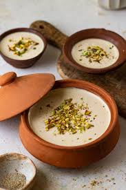

🍧 Mishti Doi

Ingredients
- 1 liter full-fat milk
- 200g sugar
- 1/2 cup plain yogurt (for the culture)
- 1/2 tsp cardamom powder (optional)
- 1 tbsp ghee (clarified butter)
Instructions
- Heat the milk in a heavy-bottomed pan over medium heat. Once it comes to a boil, reduce the heat to low and let it simmer for 15-20 minutes to thicken slightly.
- In another small pan, heat the ghee and add sugar. Stir continuously until the sugar melts completely and turns into a light caramel (golden color).
- Add the melted sugar syrup to the simmering milk and stir well. Allow the milk to cool down to room temperature.
- Once the milk is lukewarm, add the yogurt and cardamom powder (optional), and mix gently to incorporate the culture.
- Transfer the milk mixture into a clay pot or serving bowl.
- Cover with a lid and place it in a warm, undisturbed spot for 6-8 hours or overnight to allow it to set. The yogurt should firm up and turn sweet.
- Once set, refrigerate for a couple of hours before serving for a chilled treat.
💡 Tip: Mishti Doi tastes best when made in a clay pot, which enhances its flavor and texture.